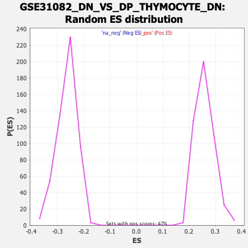

Profile of the Running ES Score & Positions of GeneSet Members on the Rank Ordered List
| Dataset | qlf.KOd4vsWTd4_gsea_score |
| Phenotype | NoPhenotypeAvailable |
| Upregulated in class | na_neg |
| GeneSet | GSE31082_DN_VS_DP_THYMOCYTE_DN |
| Enrichment Score (ES) | -0.59812653 |
| Normalized Enrichment Score (NES) | -2.2722554 |
| Nominal p-value | 0.0 |
| FDR q-value | 0.0 |
| FWER p-Value | 0.0 |
| SYMBOL | RANK IN GENE LIST | RANK METRIC SCORE | RUNNING ES | CORE ENRICHMENT | |
|---|---|---|---|---|---|
| 1 | BRAF | 703 | 2.421 | -0.0567 | No |
| 2 | NFAT5 | 883 | 2.152 | -0.0640 | No |
| 3 | IGSF23 | 1051 | 1.903 | -0.0713 | No |
| 4 | SYNJ2BP | 1355 | 1.579 | -0.0933 | No |
| 5 | LYNX1 | 1817 | 1.210 | -0.1323 | No |
| 6 | LZTFL1 | 1840 | 1.193 | -0.1288 | No |
| 7 | BNIP2 | 2068 | 1.031 | -0.1460 | No |
| 8 | PPP1R21 | 2125 | 0.995 | -0.1468 | No |
| 9 | ATXN7 | 2461 | 0.824 | -0.1753 | No |
| 10 | ULBP1 | 2509 | 0.798 | -0.1762 | No |
| 11 | TNPO2 | 2594 | 0.760 | -0.1807 | No |
| 12 | LYSMD3 | 2667 | 0.733 | -0.1843 | No |
| 13 | SLK | 3263 | 0.504 | -0.2395 | No |
| 14 | TOB1 | 3287 | 0.495 | -0.2394 | No |
| 15 | KDM6B | 3585 | 0.404 | -0.2663 | No |
| 16 | CHD1 | 3626 | 0.389 | -0.2684 | No |
| 17 | SF3B1 | 3694 | 0.371 | -0.2731 | No |
| 18 | IRGQ | 3774 | 0.350 | -0.2791 | No |
| 19 | PLEKHF2 | 3944 | 0.306 | -0.2941 | No |
| 20 | MLLT10 | 3948 | 0.304 | -0.2929 | No |
| 21 | CCDC88B | 4167 | 0.249 | -0.3129 | No |
| 22 | TAOK2 | 4453 | 0.179 | -0.3396 | No |
| 23 | DLG3 | 4475 | 0.176 | -0.3408 | No |
| 24 | RSF1 | 4581 | 0.147 | -0.3503 | No |
| 25 | SEC62 | 4615 | 0.142 | -0.3528 | No |
| 26 | HNRNPH1 | 4682 | 0.128 | -0.3586 | No |
| 27 | CCDC134 | 4689 | 0.127 | -0.3586 | No |
| 28 | GPATCH11 | 4780 | 0.109 | -0.3668 | No |
| 29 | LATS1 | 4853 | 0.096 | -0.3733 | No |
| 30 | NETO2 | 4863 | 0.094 | -0.3738 | No |
| 31 | SLC30A9 | 4876 | 0.093 | -0.3745 | No |
| 32 | EP300 | 4880 | 0.092 | -0.3744 | No |
| 33 | GNA13 | 4954 | 0.079 | -0.3811 | No |
| 34 | EPC2 | 5024 | 0.065 | -0.3874 | No |
| 35 | VAV2 | 5165 | 0.041 | -0.4008 | No |
| 36 | IP6K2 | 5176 | 0.039 | -0.4016 | No |
| 37 | PHF12 | 5312 | 0.017 | -0.4146 | No |
| 38 | SENP6 | 5322 | 0.016 | -0.4154 | No |
| 39 | BRWD3 | 5350 | 0.010 | -0.4179 | No |
| 40 | YIPF4 | 5391 | 0.002 | -0.4218 | No |
| 41 | TRAK2 | 5483 | -0.013 | -0.4305 | No |
| 42 | MARK3 | 5589 | -0.030 | -0.4405 | No |
| 43 | IDS | 5639 | -0.037 | -0.4451 | No |
| 44 | SMC4 | 5694 | -0.046 | -0.4501 | No |
| 45 | IDNK | 5715 | -0.050 | -0.4518 | No |
| 46 | PSD4 | 5716 | -0.050 | -0.4516 | No |
| 47 | DNAJC3 | 5720 | -0.050 | -0.4517 | No |
| 48 | PTTG1IP | 5755 | -0.058 | -0.4547 | No |
| 49 | STRN | 5812 | -0.066 | -0.4598 | No |
| 50 | ARFGAP2 | 5871 | -0.074 | -0.4651 | No |
| 51 | PKD1 | 5882 | -0.077 | -0.4657 | No |
| 52 | RLF | 5914 | -0.082 | -0.4683 | No |
| 53 | GGPS1 | 5944 | -0.088 | -0.4707 | No |
| 54 | E4F1 | 6042 | -0.104 | -0.4796 | No |
| 55 | RABAC1 | 6108 | -0.116 | -0.4853 | No |
| 56 | TNRC6B | 6228 | -0.140 | -0.4962 | No |
| 57 | TRIM39 | 6275 | -0.149 | -0.5000 | No |
| 58 | RBM5 | 6373 | -0.171 | -0.5085 | No |
| 59 | ENTPD7 | 6402 | -0.179 | -0.5104 | No |
| 60 | SNX25 | 6411 | -0.182 | -0.5103 | No |
| 61 | CSRNP2 | 6428 | -0.184 | -0.5110 | No |
| 62 | SETD7 | 6443 | -0.187 | -0.5115 | No |
| 63 | PBX2 | 6447 | -0.188 | -0.5109 | No |
| 64 | APLP2 | 6498 | -0.199 | -0.5148 | No |
| 65 | STIM2 | 6543 | -0.210 | -0.5181 | No |
| 66 | ACADM | 6603 | -0.225 | -0.5228 | No |
| 67 | ATG16L1 | 6604 | -0.225 | -0.5217 | No |
| 68 | KIF3B | 6608 | -0.226 | -0.5210 | No |
| 69 | DNAJC5 | 6628 | -0.231 | -0.5217 | No |
| 70 | DIP2A | 6676 | -0.244 | -0.5251 | No |
| 71 | TM9SF3 | 6678 | -0.244 | -0.5241 | No |
| 72 | DFFA | 6759 | -0.263 | -0.5306 | No |
| 73 | KIF5B | 6842 | -0.285 | -0.5372 | No |
| 74 | CFL1 | 6889 | -0.298 | -0.5403 | No |
| 75 | APBB1IP | 6925 | -0.308 | -0.5422 | No |
| 76 | TCF12 | 6926 | -0.309 | -0.5408 | No |
| 77 | USP32 | 6953 | -0.315 | -0.5418 | No |
| 78 | KDM3B | 7112 | -0.362 | -0.5554 | No |
| 79 | SENP7 | 7168 | -0.376 | -0.5590 | No |
| 80 | GMEB2 | 7202 | -0.386 | -0.5604 | No |
| 81 | LDB1 | 7285 | -0.410 | -0.5664 | No |
| 82 | OTUD5 | 7344 | -0.434 | -0.5700 | No |
| 83 | KLHL17 | 7350 | -0.436 | -0.5685 | No |
| 84 | KDM4B | 7369 | -0.442 | -0.5681 | No |
| 85 | FBXW5 | 7380 | -0.445 | -0.5670 | No |
| 86 | PIK3R3 | 7390 | -0.448 | -0.5658 | No |
| 87 | GPBP1 | 7391 | -0.448 | -0.5637 | No |
| 88 | RANBP6 | 7437 | -0.463 | -0.5659 | No |
| 89 | TRIOBP | 7468 | -0.478 | -0.5666 | No |
| 90 | TNFAIP3 | 7505 | -0.494 | -0.5678 | No |
| 91 | ARHGDIB | 7751 | -0.592 | -0.5887 | No |
| 92 | AFF1 | 7805 | -0.611 | -0.5910 | No |
| 93 | AMPD1 | 7847 | -0.630 | -0.5920 | No |
| 94 | FOXO4 | 7884 | -0.647 | -0.5925 | No |
| 95 | SDF2 | 7889 | -0.648 | -0.5899 | No |
| 96 | FMNL1 | 7931 | -0.666 | -0.5907 | No |
| 97 | ATP6V1E1 | 7962 | -0.679 | -0.5905 | No |
| 98 | DDX3Y | 8009 | -0.696 | -0.5917 | No |
| 99 | PHKG2 | 8050 | -0.715 | -0.5922 | No |
| 100 | TNRC6C | 8112 | -0.742 | -0.5947 | Yes |
| 101 | NR1H2 | 8124 | -0.748 | -0.5922 | Yes |
| 102 | KMT2E | 8133 | -0.753 | -0.5895 | Yes |
| 103 | PHF3 | 8184 | -0.777 | -0.5907 | Yes |
| 104 | RNF38 | 8186 | -0.780 | -0.5872 | Yes |
| 105 | TMOD3 | 8233 | -0.810 | -0.5879 | Yes |
| 106 | KAT2B | 8269 | -0.826 | -0.5874 | Yes |
| 107 | FAM89B | 8312 | -0.847 | -0.5875 | Yes |
| 108 | SAG | 8329 | -0.856 | -0.5851 | Yes |
| 109 | ANKRD13D | 8351 | -0.869 | -0.5831 | Yes |
| 110 | ATAD2B | 8354 | -0.871 | -0.5792 | Yes |
| 111 | MAPK7 | 8436 | -0.935 | -0.5827 | Yes |
| 112 | TBCEL | 8438 | -0.936 | -0.5784 | Yes |
| 113 | PI4KB | 8473 | -0.953 | -0.5772 | Yes |
| 114 | SRGAP2 | 8561 | -1.007 | -0.5810 | Yes |
| 115 | N4BP2 | 8564 | -1.008 | -0.5765 | Yes |
| 116 | TAF8 | 8587 | -1.020 | -0.5738 | Yes |
| 117 | TRAM1 | 8593 | -1.023 | -0.5695 | Yes |
| 118 | SECISBP2L | 8632 | -1.048 | -0.5683 | Yes |
| 119 | PRKAG1 | 8674 | -1.073 | -0.5673 | Yes |
| 120 | RNF6 | 8680 | -1.078 | -0.5628 | Yes |
| 121 | MBTPS1 | 8695 | -1.085 | -0.5591 | Yes |
| 122 | TRIP11 | 8786 | -1.135 | -0.5625 | Yes |
| 123 | TBX6 | 8906 | -1.236 | -0.5682 | Yes |
| 124 | EPSTI1 | 8909 | -1.237 | -0.5627 | Yes |
| 125 | BACH1 | 8937 | -1.263 | -0.5594 | Yes |
| 126 | PAN2 | 8955 | -1.277 | -0.5551 | Yes |
| 127 | ARAP2 | 9118 | -1.430 | -0.5641 | Yes |
| 128 | ANXA7 | 9124 | -1.434 | -0.5579 | Yes |
| 129 | RASAL3 | 9169 | -1.485 | -0.5552 | Yes |
| 130 | AGPAT3 | 9179 | -1.497 | -0.5491 | Yes |
| 131 | ZYG11B | 9212 | -1.535 | -0.5451 | Yes |
| 132 | LBR | 9225 | -1.549 | -0.5390 | Yes |
| 133 | PHF1 | 9291 | -1.609 | -0.5378 | Yes |
| 134 | CYB561D1 | 9326 | -1.646 | -0.5334 | Yes |
| 135 | FAM160B2 | 9408 | -1.738 | -0.5331 | Yes |
| 136 | SYF2 | 9459 | -1.812 | -0.5295 | Yes |
| 137 | BCL10 | 9474 | -1.839 | -0.5223 | Yes |
| 138 | NBR1 | 9514 | -1.898 | -0.5172 | Yes |
| 139 | DCLRE1C | 9516 | -1.899 | -0.5085 | Yes |
| 140 | MAP1LC3B | 9589 | -2.023 | -0.5060 | Yes |
| 141 | FRYL | 9602 | -2.044 | -0.4977 | Yes |
| 142 | ATG9A | 9607 | -2.055 | -0.4885 | Yes |
| 143 | TDRP | 9631 | -2.089 | -0.4809 | Yes |
| 144 | ZNRF1 | 9744 | -2.317 | -0.4810 | Yes |
| 145 | MAF1 | 9770 | -2.366 | -0.4724 | Yes |
| 146 | ZMYM5 | 9794 | -2.413 | -0.4633 | Yes |
| 147 | S100A13 | 9896 | -2.608 | -0.4610 | Yes |
| 148 | CNGA1 | 9919 | -2.672 | -0.4506 | Yes |
| 149 | ABCC5 | 9935 | -2.724 | -0.4394 | Yes |
| 150 | LIMK2 | 9976 | -2.860 | -0.4299 | Yes |
| 151 | MDP1 | 9977 | -2.860 | -0.4166 | Yes |
| 152 | AP3D1 | 10038 | -3.021 | -0.4083 | Yes |
| 153 | CCM2 | 10049 | -3.056 | -0.3950 | Yes |
| 154 | SBK1 | 10055 | -3.082 | -0.3812 | Yes |
| 155 | AXIN2 | 10069 | -3.162 | -0.3677 | Yes |
| 156 | PREX1 | 10075 | -3.178 | -0.3533 | Yes |
| 157 | PTPRC | 10093 | -3.226 | -0.3399 | Yes |
| 158 | CTDSP2 | 10128 | -3.379 | -0.3275 | Yes |
| 159 | KCNA2 | 10141 | -3.429 | -0.3127 | Yes |
| 160 | CCNG2 | 10144 | -3.448 | -0.2968 | Yes |
| 161 | PSTPIP1 | 10152 | -3.463 | -0.2813 | Yes |
| 162 | PPTC7 | 10159 | -3.473 | -0.2657 | Yes |
| 163 | TMEM50A | 10174 | -3.535 | -0.2506 | Yes |
| 164 | ARHGAP1 | 10236 | -3.897 | -0.2383 | Yes |
| 165 | EPHB6 | 10258 | -4.066 | -0.2214 | Yes |
| 166 | SGK1 | 10359 | -4.746 | -0.2089 | Yes |
| 167 | HIF1A | 10367 | -4.786 | -0.1873 | Yes |
| 168 | NFKBIZ | 10377 | -4.902 | -0.1653 | Yes |
| 169 | SIRT7 | 10384 | -4.986 | -0.1427 | Yes |
| 170 | GPR146 | 10402 | -5.209 | -0.1200 | Yes |
| 171 | ORAI2 | 10403 | -5.209 | -0.0957 | Yes |
| 172 | CAMK1D | 10404 | -5.209 | -0.0715 | Yes |
| 173 | TSPO | 10433 | -5.552 | -0.0483 | Yes |
| 174 | TXNIP | 10440 | -5.710 | -0.0222 | Yes |
| 175 | ABLIM1 | 10460 | -6.163 | 0.0046 | Yes |
